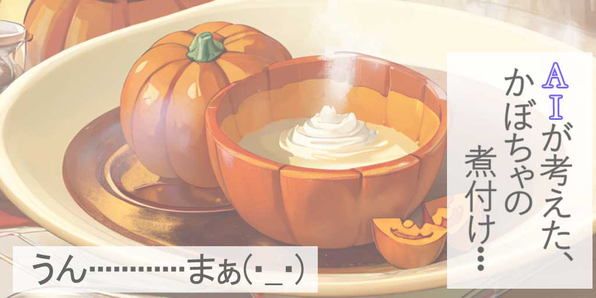
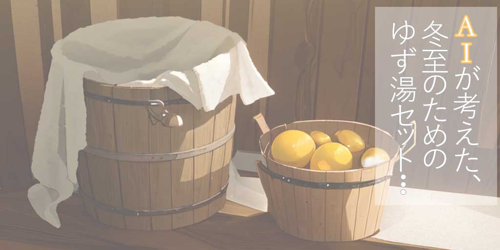

二十四節気の『冬至（とうじ）』とは：冬至の深い意味と楽しみ方 - 伝統的なかぼちゃなどの食べ物と、ゆず湯という冬至の習慣
冬至（とうじ）の魅力への招待
「冬至（とうじ）」、それは一年で最も昼が短く、夜が長い日。冬の訪れを告げ、寒さが深まるこの時期は、古来より人々の生活や文化に大きな影響を与えてきました。この記事では、冬至の歴史的背景とその現代的な意味合いに光を当て、この特別な日をどのように過ごせば良いのか、そして冬至に関連する美味しい食べ物や健康への効果を探求します。冬至の深い魅力を一緒に探りましょう。どうぞ、この季節ならではの温もりと喜びを、私たちと共に感じてください。
冬至（とうじ）の意味と歴史: 古代から現代までの変遷
冬至は、太陽の力が最も弱まり、昼間が最も短くなる日です。この日は、太陽の動きに基づく自然のサイクルの重要なマーカーとして、古代から多くの文化で特別な意味を持ってきました。冬至は、古代中国の農業暦において、次の年の準備を始める時期とされ、日本においても古来から重要な節目として認識されています。
冬至には多くの伝統的な風習があり、特に「ゆず湯」に入る習慣は、冬の寒さを和らげ、邪気を払い健康を祈るという信念から生まれました。また、この時期には、冬至かぼちゃを食べる習慣もあります。これらの習慣は、冬至が古来より人々の生活に深く根付いていることを物語っています。
現代においても、冬至は多くの家庭で特別な日として扱われ、季節の変わり目を感じる機会となっています。冬至を通じて、私たちは自然のリズムと調和し、健康と豊かな生活を祈る伝統を今に伝えているのです。
冬至（とうじ）の食べ物とレシピ: 2023年冬の味覚を楽しむ
冬至は、日本の食文化においても特別な意味を持つ節気です。この時期には、旬の食材を使った伝統的な料理が多く登場します。冬至に特有の食べ物の一つが「かぼちゃ」です。カボチャは冬至に食べると、邪気を払い疫病から身を守るとされてきました。シンプルに煮物として楽しむのが一般的ですが、甘い味わいが特徴で、煮崩れしにくいため、様々な料理にアレンジが可能です。
また、冬至には「小豆粥」を食べる風習もあります。小豆粥は、体を温めるとともに、健康と長寿を願う意味が込められています。小豆と白米を炊き合わせ、シンプルながらも栄養価の高い一品として、冬至の日には多くの家庭で楽しまれます。
これらの伝統的な食材に加え、冬至には新鮮な魚介類を楽しむことも多いです。特に、寒ブリやカキなどはこの時期が旬で、寒い冬には栄養豊富で体を温める食材として重宝されます。寒ブリは刺身や照り焼き、カキはフライや鍋物にするのがおすすめです。
冬至の食文化は、寒い季節を彩る暖かな味わいとして、現代の食卓にも根強い人気を誇っています。これらの食材を使った料理は、冬至の日の特別な食事として、また日々の健康を支える栄養豊富な食事として、楽しむことができるでしょう。
ゆず湯の魅力: 冬至（とうじ）における健康と癒し
冬至には、体を温め、冬の寒さを和らげるために「ゆず湯」に入るという美しい風習があります。ゆず湯は、その香り高い柑橘類、ゆずを浴槽に浮かべて入浴することで、リラクゼーション効果を高めると共に、数多くの健康効果をもたらします。ゆずの皮に含まれる精油は、リラックス効果が高く、冬の冷え込む日に心身ともに温まるのに最適です。
また、ゆず湯には血行を促進し、冷え性の改善にも役立つ効果があります。ゆずに含まれるビタミンCは、肌の乾燥を防ぎ、美肌効果も期待できます。特に冬の時期は、乾燥する肌に潤いをもたらし、健康を維持するのに役立つため、ゆず湯は美容面でも注目されています。
古くから、ゆず湯に入ることは邪気を払い、病気を避けるための風習とされていました。この習慣は現代においても引き継がれ、冬至の日には多くの家庭でゆず湯が楽しまれます。ゆずの爽やかな香りは心を和ませ、冬の寒さからくるストレスから解放してくれます。
このセクションでは、ゆず湯の持つ伝統的な意義と、その健康や美容に関する効果を紹介いたしました。冬至の日の特別なリラクゼーション体験としてゆず湯を提案します。ゆず湯は、冬至を迎える日本の家庭にとって、心と体を癒やす、素敵な習慣と言えるでしょう。
おみくじタイムをどうぞ。
あなたの今日の運勢は何％かな？？
冬至（とうじ）と健康: 季節の変わり目におけるウェルネスの秘訣

冬至は、年間で最も昼が短く夜が長い日であり、自然界のリズムが私たちの健康に与える影響を考える絶好の機会です。この時期、日照時間の短縮は体内時計に影響を及ぼし、睡眠パターンや気分、エネルギーレベルに変化をもたらすことがあります。そのため、冬至は、自分自身の健康とウェルネスに注意を向け、調和を取り戻すのに理想的な時期です。
冬至には、自然に寄り添った生活をすることで、季節の変化に適応することが重要です。早寝早起きを心掛け、日中の自然光をできるだけ多く浴びることで、体内時計を整えることが推奨されます。また、冬至は栄養価の高い食事をとり、体を温める食材を選ぶことが重要です。根菜類や季節の野菜、体を温めるスパイスを使った料理は、この時期に特におすすめです。
さらに、冬至は精神的な健康にも配慮する時期です。瞑想やヨガ、日記を書くなど、心を落ち着かせる活動を取り入れることで、ストレスを軽減し、冬の季節に起こりがちな気分の落ち込みを予防することができます。また、家族や友人との時間を大切にし、コミュニケーションを通じて心のつながりを深めることも大切です。
このセクションでは、冬至における健康の維持とウェルネスの増進のための実践的なアドバイスを提供いたしました。季節の変わり目に自分の健康に意識を向けることで、寒い季節を健やかに過ごすための、あなたのヒントになれば幸いです。
現代における冬至（とうじ）の価値と意義
現代社会において、冬至はただの暦の節目以上の意味を持ちます。この時期は、年の終わりに近づき、新たな年を迎える準備を始める象徴的な瞬間です。冬至は、一年の中で最も夜が長く、日が短い時期であることから、内省と自己再発見の機会を提供します。これは、過去を振り返り、来る年に向けた目標と願いを見つめ直す時間となります。
現代の忙しい生活の中で、冬至はゆっくりと呼吸をする機会を与えてくれます。この時期は、家族や友人との時間を大切にし、日常の喧騒から離れて心を落ち着かせるのに最適な時です。また、冬至に関連する伝統行事や食事は、文化的な繋がりを感じ、コミュニティの結束を強化する機会を提供します。
冬至はまた、自然とのつながりを思い起こさせる節気でもあります。自然界のリズムに合わせて生活することの重要性を思い出させ、季節の変化に敏感になるきっかけを与えてくれます。この時期には、自然の中で過ごす時間を大切にし、日々の生活の中で自然との調和を図ることの大切さを再認識することができます。
冬至2023: 伝統と現代が交差する、冬至（とうじ）の風習とその意義
冬至は、遥か昔から続く伝統的な節気であり、現代でも多くの文化的な風習が色濃く残っています。しかし、これらの伝統は単なる習慣ではなく、時代を超えて私たちの生活に深く根差した意味を持ち続けています。2023年の冬至も、古くからの風習と現代的な解釈が見事に融合し、独自の魅力を放っています。
一例として、冬至にゆず湯に入る習慣は、古来より身体を温め、冬の寒さを和らげるための方法として重宝されてきました。しかし現代では、これがリラクゼーションや自己ケアの一環として見直されています。ゆずの香りと暖かい湯は、ストレスの多い現代人にとって心身の癒やしを提供します。
また、冬至に食べられるカボチャや小豆などの食材も、健康や美容に良いと再認識されています。これらの食材は、古くから体を温める効果があるとされていましたが、現代の栄養学的な視点からも高く評価されています。
冬至の期間に行われる家族や地域の集まりは、現代の忙しい生活の中で、人々が交流し、コミュニティの絆を深める機会となっています。これらの集まりは、古くからの風習を守るだけでなく、現代社会における人々のつながりを再確認する場としても重要な役割を果たしています。
最後に：冬至（とうじ）の深い魅力、まとめと展望
この記事を通じて、冬至が持つ多面的な魅力に光を当ててきました。古代から続く伝統的な意義から、現代における健康やリラクゼーションへの効果まで、冬至は私たちの生活に深く根差した節気です。冬至にまつわる食事、ゆず湯、そして家族やコミュニティとのつながりは、季節の変わり目を意識し、内省とリフレッシュの機会を提供してくれます。
2023年の冬至も、私たちにとって特別な意味を持ち続けることでしょう。伝統と現代が交差するこの時期は、自然のサイクルを尊重しながら、心身の健康を見直し、新たな年への準備をする絶好の機会です。冬至を通じて、季節の美しさを再発見し、心を穏やかに過ごすことで、日常生活に新たな活力をもたらすことができるでしょう。
冬の真ん中とも言える冬至の一日を、どうぞ豊かにお過ごしくださいませ